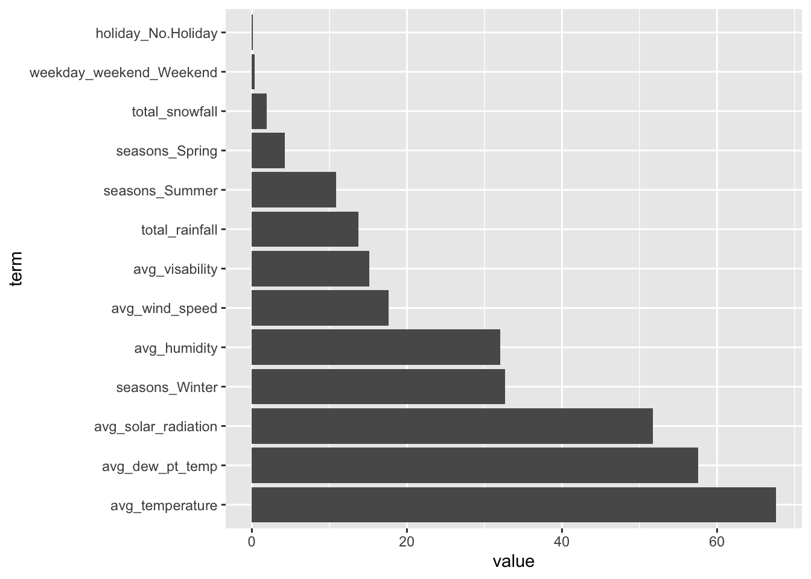
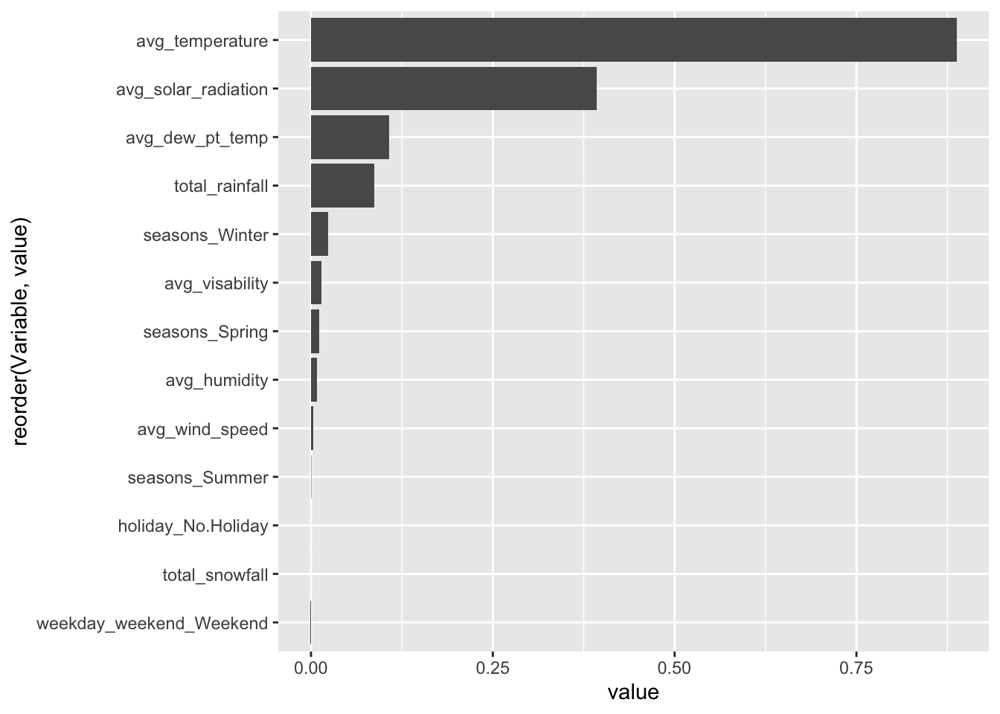

Rows: 8760 Columns: 14
── Column specification ────────────────────────────────────────────────────────
Delimiter: ","
chr (4): Date, Seasons, Holiday, Functioning Day
dbl (10): Rented Bike Count, Hour, Temperature(°C), Humidity(%), Wind speed ...
ℹ Use `spec()` to retrieve the full column specification for this data.
ℹ Specify the column types or set `show_col_types = FALSE` to quiet this message.
2. EDA - for Homework 9, commenting out most of the previously done summary stats
#1. Checking for missingnesssum(is.na(bikedata))
[1] 0
#no NAs #2. Checking the column types and values# head(bikedata)#all column types make sense, except the date-bikedata$Date <-mdy(bikedata$Date)
Warning: 5304 failed to parse.
summary(bikedata)
Date Rented Bike Count Hour Temperature(°C)
Min. :2017-01-12 Min. : 0.0 Min. : 0.00 Min. :-17.80
1st Qu.:2018-03-02 1st Qu.: 191.0 1st Qu.: 5.75 1st Qu.: 3.50
Median :2018-06-05 Median : 504.5 Median :11.50 Median : 13.70
Mean :2018-05-22 Mean : 704.6 Mean :11.50 Mean : 12.88
3rd Qu.:2018-09-08 3rd Qu.:1065.2 3rd Qu.:17.25 3rd Qu.: 22.50
Max. :2018-12-11 Max. :3556.0 Max. :23.00 Max. : 39.40
NA's :5304
Humidity(%) Wind speed (m/s) Visibility (10m) Dew point temperature(°C)
Min. : 0.00 Min. :0.000 Min. : 27 Min. :-30.600
1st Qu.:42.00 1st Qu.:0.900 1st Qu.: 940 1st Qu.: -4.700
Median :57.00 Median :1.500 Median :1698 Median : 5.100
Mean :58.23 Mean :1.725 Mean :1437 Mean : 4.074
3rd Qu.:74.00 3rd Qu.:2.300 3rd Qu.:2000 3rd Qu.: 14.800
Max. :98.00 Max. :7.400 Max. :2000 Max. : 27.200
Solar Radiation (MJ/m2) Rainfall(mm) Snowfall (cm) Seasons
Min. :0.0000 Min. : 0.0000 Min. :0.00000 Length:8760
1st Qu.:0.0000 1st Qu.: 0.0000 1st Qu.:0.00000 Class :character
Median :0.0100 Median : 0.0000 Median :0.00000 Mode :character
Mean :0.5691 Mean : 0.1487 Mean :0.07507
3rd Qu.:0.9300 3rd Qu.: 0.0000 3rd Qu.:0.00000
Max. :3.5200 Max. :35.0000 Max. :8.80000
Holiday Functioning Day
Length:8760 Length:8760
Class :character Class :character
Mode :character Mode :character
#numeric columns are fine, categoricals need converted to factorsbikedata <- bikedata %>%mutate(across(where(is.character), as.factor))# lapply(bikedata[sapply(bikedata, is.factor)], table)#categorical variables look fine#Renaming columns for easenames(bikedata) <-c("date","rental_count","hour","temperature","humidity","wind_speed","visability","dew_pt_temp","solar_radiation","rainfall","snowfall","seasons","holiday","functioning_day" )#additional summary statistics# table(bikedata$functioning_day)# table(bikedata$holiday)# table(bikedata$seasons)# # summary(bikedata$rental_count)# # bikedata %>% group_by(functioning_day, holiday, seasons) %>% summarize(count =# n())# # bikedata %>% group_by(functioning_day, rental_count) %>% summarize()#filtering dataset on functioning days onlybikedata <- bikedata %>%filter(functioning_day =="Yes")#summarize across the hoursbikedata_summary <- bikedata %>%group_by(date, seasons, holiday) %>%summarize(#summing rental count, rainfall, and snowfalltotal_rental_count =sum(rental_count, na.rm =TRUE),total_rainfall =sum(rainfall, na.rm =TRUE),total_snowfall =sum(snowfall, na.rm =TRUE),#calculate mean for other weather-related variables (temperature, dew_pt_temp, humidity, wind_speed, visability, solar_radiation)avg_temperature =mean(temperature, na.rm =TRUE),avg_humidity =mean(humidity, na.rm =TRUE),avg_wind_speed =mean(wind_speed, na.rm =TRUE),avg_dew_pt_temp =mean(dew_pt_temp, na.rm =TRUE),avg_visability =mean(visability, na.rm =TRUE),avg_solar_radiation =mean(solar_radiation, na.rm =TRUE) ) %>%ungroup()
`summarise()` has grouped output by 'date', 'seasons'. You can override using
the `.groups` argument.
#Basic summary stats with new data # summary(bikedata_summary)# sum(is.na(bikedata_summary))#get rid of the na's bikedata_summary<- bikedata_summary%>%drop_na()#correlation matrix between the numeric variables bike_numeric <- bikedata_summary[sapply(bikedata_summary, is.numeric)]# cor(bike_numeric)
There are some obvious/expected correlations just due to this being a lot of weather data, such as a positive correlation between humidity and rainfall. Something I think is interesting is the positive correlation between dew pt. and total rental count (I hate a humid day) but again that’s probably just because, as we see, dew pt. has almost a completely positive correlation with temperature (0.97)
categorical_vars <-c("seasons","holiday")numeric_vars <-names(bike_numeric)#Loop through each categorical variable to create a plot# for (cat_var in categorical_vars) {# long_data<- bikedata_summary %>%# select(all_of(c(cat_var,numeric_vars))) %>% # pivot_longer(cols = all_of(numeric_vars), names_to = "numeric_variable", values_to = "value")# # #plot# plot <- ggplot(long_data, aes_string(x = cat_var, y = "value")) +# geom_boxplot() +# facet_wrap(~ numeric_variable, scales = "free_y") +# labs(# title = paste("Relationship Between", cat_var, "and Numeric Variables"),# x = cat_var,# y = "Value"# ) +# theme_minimal()# # # Print the plot# print(plot)# }
The relationship between snow and rainfall and whether it’s a holiday or not is weird! Other than that, there isn’t anything way out of the ordinary.
#Looking at how total rent count relates to the other variables # #with numeric variables using GGally package # ggpairs(bike_numeric, title = "Scatterplot Matrix: Total Rental Count and Numeric Variables",# #first time I printed everything was way too big for screen # lower = list(continuous = wrap("points", size = 0.5, alpha = 0.3)), #adjust point size for each scatter plot # upper = list(continuous = wrap("cor", size = 3)) #adjust size of the corr. statistics in each box # ) + theme(# axis.text = element_text(size = 6), #smaller axis labels # strip.text = element_text(size = 6) #smaller facet labels # )# # #with categorical variables # for (cat_var in categorical_vars) {# #boxplot for each categorical variable# plot <- ggplot(bikedata_summary, aes_string(x = cat_var, y = "total_rental_count")) +# geom_boxplot() +# labs(# title = paste("Total Rental Count by", cat_var),# x = cat_var,# y = "Total Rental Count"# ) +# theme_minimal()# # #print the plot# print(plot)# }
These both makes logistical sense.
3. Splitting the data
#split the data into training (75%) and testing (25%) sets, stratified by 'seasons'set.seed(123) # Set a seed for reproducibilitybike_split <-initial_split(bikedata_summary, prop =0.75, strata = seasons)#extract the training and testing setstrain_data <-training(bike_split)test_data <-testing(bike_split)#on the training data, create a 10-fold CV split cv_split <-vfold_cv(train_data, v =10, strata = seasons)#checking the structure of the cross-validation splitscv_split
Here, we will also fit the models using 10-fold cross-validation to determine the best model.
#Recipe #1 ---------------#fixing the date columnbike_1_recipe <-recipe(total_rental_count ~ ., data = bikedata_summary) %>%#extract the day of the week from the date variablestep_date(date, features ="dow", label =TRUE) %>%#create a new factor variable 'weekday_weekend'step_mutate(weekday_weekend =factor(if_else(date_dow %in%c("Sat", "Sun"), "Weekend", "Weekday")) ) %>%#remove the intermediate 'dow' variable and the original 'date' variablestep_rm(date_dow, date) %>%#standardize numeric vars step_normalize(all_numeric()) %>%#dummy variables step_dummy(all_nominal_predictors())#prepare and bake the recipefirst_recipe<-prep(bike_1_recipe)# bike_1_recipebake(first_recipe, bikedata_summary)
→ A | warning: prediction from rank-deficient fit; consider predict(., rankdeficient="NA")
#collect metrics of the three models # rbind(# rec1_fits %>% collect_metrics(),# rec2_fits %>% collect_metrics(),# rec3_fits %>% collect_metrics())
Looking at the metrics of the three models, the best model is model 2 with the lowest rmse and highest value of R-squared.
5. Fitting the best MLR model
Here, we will fit the best model to the entire training data set
we will additionally compute the RMSE metric on the test set and obtain the model (fit on the entire training set) coefficient table
#fitting on the training set bbnfgbfinal_fit <- recipe_2_wfl %>%last_fit(split = bike_split, metrics =metric_set(rmse,mae))
→ A | warning: prediction from rank-deficient fit; consider predict(., rankdeficient="NA")
#finding test set metricsfinal_fit %>%collect_metrics()
# A tibble: 2 × 4
.metric .estimator .estimate .config
<chr> <chr> <dbl> <chr>
1 rmse standard 0.301 Preprocessor1_Model1
2 mae standard 0.224 Preprocessor1_Model1
#storing metrics as a table MLR_coef <- final_fit %>%collect_metrics()#obtaining the final model fit final_MLR_model <- final_fit %>%extract_fit_parsnip()#tidy table of coefficients tidy(final_MLR_model)
The RMSE metric of the test set is 0.301. The R-squared value is 0.91, meaning the model explains 91% of the variance in the total_rental_count. The coefficient table shows each coefficient/estimate for the predictors in the model.
Homework 9 Extension
6. Tuned LASSO Model
#set up how we'll fit LASSO model lasso_recipe <-recipe(total_rental_count ~., data = bikedata_summary) %>%step_date(date, features ="dow", label =TRUE) %>%step_mutate(weekday_weekend =factor(if_else(date_dow %in%c("Sat", "Sun"), "Weekend", "Weekday")) ) %>%step_rm(date_dow, date) %>%step_normalize(all_numeric()) %>%step_dummy(all_nominal_predictors())#create a model instance lasso_spec <-linear_reg(penalty =tune(), mixture =1) %>%set_engine("glmnet")#create workflowlasso_wkf <-workflow() %>%add_recipe(lasso_recipe) %>%add_model(lasso_spec)lasso_wkf
#fitting the model using tune_grid (fitting model to CV folds)lasso_grid <- lasso_wkf %>%tune_grid(resamples= cv_split,grid=grid_regular(penalty(), levels =200))
→ A | warning: A correlation computation is required, but `estimate` is constant and has 0
standard deviation, resulting in a divide by 0 error. `NA` will be returned.
#finalize best model on the training set #fit the best modelregtree_final_wkf <- regtree_wkf %>%finalize_workflow(regtree_best_param)#fit on entire training set regtree_final_fit <- regtree_final_wkf %>%last_fit(bike_split, metrics =metric_set(rmse, mae))regtree_final_fit %>%collect_metrics()
# A tibble: 2 × 4
.metric .estimator .estimate .config
<chr> <chr> <dbl> <chr>
1 rmse standard 0.340 Preprocessor1_Model1
2 mae standard 0.241 Preprocessor1_Model1
#storing as a table- regtree_coef <- regtree_final_fit %>%collect_metrics()
#same recipe used as previous #define model type/enginebag_spec <-bag_tree(tree_depth =5, min_n=10, cost_complexity =tune()) %>%set_engine("rpart") %>%set_mode("regression")#create workflowbag_wkf <-workflow() %>%add_recipe(lasso_recipe) %>%add_model(bag_spec)#fit to cv folds bag_fit <- bag_wkf %>%tune_grid(resamples = cv_split, grid =grid_regular(cost_complexity(),levels =15),metrics =metric_set(rmse, mae))# bag_fit %>% # collect_metrics() %>% # filter(.metric == "rmse") %>% # arrange(mean)#retrieve best tuning parameterbag_best_param <-select_best(bag_fit)
Warning in select_best(bag_fit): No value of `metric` was given; "rmse" will be
used.
#refit on entire training set bag_final_wkf <- bag_wkf %>%finalize_workflow(bag_best_param)bag_final_fit <- bag_final_wkf %>%last_fit(bike_split, metrics =metric_set(rmse,mae))collect_metrics(bag_final_fit)
# A tibble: 2 × 4
.metric .estimator .estimate .config
<chr> <chr> <dbl> <chr>
1 rmse standard 0.301 Preprocessor1_Model1
2 mae standard 0.247 Preprocessor1_Model1
#storing as table bag_coef<-collect_metrics(bag_final_fit)
Variable Importance Plot:
#extract the final model and plot bag_final_model <-extract_fit_engine(bag_final_fit)bag_final_model$imp %>%mutate(term=factor(term,levels=term)) %>%ggplot(aes(x=term,y=value)) +geom_bar(stat ="identity") +coord_flip()

#avg temp has biggest play in the outcome!
9. Tuned Random Forest Model
#same recipe as previous #model specs - i found i had to add in the extra importance object to be able to get the variable importance info later on rf_spec <-rand_forest(mtry=tune()) %>%set_engine("ranger", importance ="permutation") %>%set_mode("regression")#create workflow rf_wkf <-workflow() %>%add_recipe(lasso_recipe) %>%add_model(rf_spec)#fit to cv foldsrf_fit <- rf_wkf %>%tune_grid(resamples = cv_split, grid =7,metrics =metric_set(rmse,mae))
i Creating pre-processing data to finalize unknown parameter: mtry
#looking at metrics across folds rf_fit %>%collect_metrics() %>%arrange(mean)
# A tibble: 14 × 7
mtry .metric .estimator mean n std_err .config
<int> <chr> <chr> <dbl> <int> <dbl> <chr>
1 10 mae standard 0.257 10 0.0205 Preprocessor1_Model2
2 12 mae standard 0.259 10 0.0191 Preprocessor1_Model6
3 9 mae standard 0.261 10 0.0203 Preprocessor1_Model5
4 7 mae standard 0.264 10 0.0211 Preprocessor1_Model7
5 5 mae standard 0.269 10 0.0225 Preprocessor1_Model3
6 4 mae standard 0.284 10 0.0229 Preprocessor1_Model4
7 10 rmse standard 0.324 10 0.0242 Preprocessor1_Model2
8 2 mae standard 0.325 10 0.0248 Preprocessor1_Model1
9 12 rmse standard 0.326 10 0.0226 Preprocessor1_Model6
10 9 rmse standard 0.327 10 0.0238 Preprocessor1_Model5
11 7 rmse standard 0.328 10 0.0245 Preprocessor1_Model7
12 5 rmse standard 0.333 10 0.0266 Preprocessor1_Model3
13 4 rmse standard 0.350 10 0.0282 Preprocessor1_Model4
14 2 rmse standard 0.400 10 0.0299 Preprocessor1_Model1
#get best tuning parameterrf_best_param <-select_best(rf_fit)
Warning in select_best(rf_fit): No value of `metric` was given; "rmse" will be
used.
#refit on entire training set with this paramrf_final_wkf <- rf_wkf %>%finalize_workflow(rf_best_param)rf_final_fit <- rf_final_wkf %>%last_fit(bike_split, metrics =metric_set(rmse,mae))collect_metrics(rf_final_fit)
# A tibble: 2 × 4
.metric .estimator .estimate .config
<chr> <chr> <dbl> <chr>
1 rmse standard 0.255 Preprocessor1_Model1
2 mae standard 0.204 Preprocessor1_Model1
#saving as table rf_coef<-collect_metrics(rf_final_fit)
Variable Importance Plot:
#extract the final model and plot rf_final_model <-extract_fit_engine(rf_final_fit)#earlier used code didnt work for this modelimpor_data<-as.data.frame(rf_final_model$variable.importance) %>%rownames_to_column("Variable") %>%rename(value ="rf_final_model$variable.importance") %>%arrange(desc(value)) ggplot(impor_data, aes(x =reorder(Variable, value), y = value)) +geom_bar(stat ="identity") +coord_flip()

#This model also suggests temp has the biggest roll, by a lot
10. Comparing all final models (including the best MLR model from homework 8)
#add model names as a new columnMLR_coef <- MLR_coef %>%mutate(model ="MLR")lasso_coef <- lasso_coef %>%mutate(model ="Lasso")regtree_coef <- regtree_coef %>%mutate(model ="Regression Tree")bag_coef <- bag_coef %>%mutate(model ="Bagging")rf_coef <- rf_coef %>%mutate(model ="Random Forest")rbind(MLR_coef,lasso_coef,regtree_coef,bag_coef,rf_coef)
# A tibble: 10 × 5
.metric .estimator .estimate .config model
<chr> <chr> <dbl> <chr> <chr>
1 rmse standard 0.301 Preprocessor1_Model1 MLR
2 mae standard 0.224 Preprocessor1_Model1 MLR
3 rmse standard 0.441 Preprocessor1_Model1 Lasso
4 mae standard 0.370 Preprocessor1_Model1 Lasso
5 rmse standard 0.340 Preprocessor1_Model1 Regression Tree
6 mae standard 0.241 Preprocessor1_Model1 Regression Tree
7 rmse standard 0.301 Preprocessor1_Model1 Bagging
8 mae standard 0.247 Preprocessor1_Model1 Bagging
9 rmse standard 0.255 Preprocessor1_Model1 Random Forest
10 mae standard 0.204 Preprocessor1_Model1 Random Forest
The random forest model did the best, with a RMSE of 0.250 and a MAE of 0.206. The bagging tree method was very close to this method on these metrics. The Lasso model performed the worst.
11. Fitting the overall best model to the entire data set